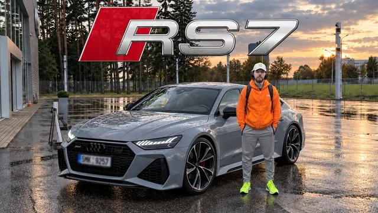

13만 5천 달러짜리 드림카를 샀습니다

원본 영상 보기 →
- 큰 지출은 표면가가 아니라 총비용으로 비교했다
- 용도가 겹치지 않으면 자산을 굳이 하나로 통합하지 않았다
- 구매 전 이미지 생성 AI로 결과물을 미리 확인했다
한 줄 요약
자동화 채널 운영자 Eugene Kadzina가 오랜 꿈이었던 Audi RS7을 $130,000에 구매하는 하루를 브이로그로 기록한 영상으로, 업무 자동화나 비즈니스 인사이트는 없는 개인 소비 콘텐츠다.
전체 내용 정리
새 차를 고민하며 대형 오프로드카와 드림카 RS7 사이에서 저울질하다
그는 이미 Audi Q3(랩핑, 20인치 휠 장착)를 소유하고 있었지만, 두 달 전부터 새 차가 필요하다고 느꼈다. 오랜 드림카는 RS6도 R8도 BMW M5도 아닌 정확히 Audi RS7이었지만, 거주지인 벨라루스는 도로 상태가 좋지 않아 이 선택을 망설였다. 그래서 대안으로 Land Cruiser 300, Escalade V, 그리고 2025년형 Ford Raptor R을 검토했고, 한동안은 Raptor R 구매 쪽으로 거의 마음을 굳혔었다.
총비용을 따져본 뒤 Raptor R을 포기하고 RS7로 최종 결정하다
Raptor R은 미국에서는 약 $100,000~$120,000대지만 현지에서는 $200,000 선이었고, 세금 등 추가 비용을 합치면 현금 기준 $250,000까지 올라간다는 걸 확인하면서 마음을 바꿨다. 이후 수도 민스크에서 주행거리 3만km(약 2만 마일), 상태 좋고 풀옵션인 RS7 매물을 $130,000에 발견했다. 목요일에 시승해보니 생각보다 차고가 낮지 않아 운용에 무리가 없겠다고 판단했고, 2~3일 고민 끝에 구매를 확정하면서 바디킷·스테이지 1/2 튜닝·배기 교체까지 계획에 넣었다.
RS7과 Raptor R을 같은 선상에서 비교한 이유를 부연 설명하다
그는 두 차가 완전히 다른 용도라는 점을 따로 짚었다. Raptor R은 듄(사막 지형)이나 오프로드용 차량인 반면 RS7은 좋은 도로에서 타는 데일리카이며, 기존 Q3는 팔지 않고 세컨드카로 남겨 아웃도어용으로 쓰고 RS7은 데일리로 쓰기로 했다. 또한 벨라루스·러시아 지역은 독일차 공식 딜러십이 러시아-우크라이나 전쟁 이후 상당수 철수했지만 일부는 남아 있고, 같은 과세권 안에서 수입할 경우 세금 부담이 아주 크지는 않다고 설명하며, $130,000이라는 가격이 차량 상태 대비 좋은 딜이라고 평가했다.
3시간 기차를 타고 민스크로 이동해 사전 점검 결과를 확인하다
불편한 좌석의 기차로 3시간을 이동한 뒤, 정오에 판매자·정비사와 만나기 전까지 시간을 보내며 쇼핑몰 주차장에서 우연히 실제 Ford Raptor(R 트림은 아님)를 처음 실물로 봤다. 이 우연한 목격을 계기로, 유럽에서 이탈리아 골목길이나 영국 시골길처럼 좁은 도로를 다니는 로드트립에는 Raptor 같은 큰 차가 비현실적이라는 확신을 다시 한번 굳혔다. 전날 의뢰해둔 엔진·실린더 등 전체 정밀 점검 결과를 아우디 센터에서 정비사와 함께 확인한 뒤 최종적으로 차량을 인수했다.
차량을 인수하고 향후 커스텀 계획을 공개하다
인수한 RS7의 색상은 "나르도 그레이"였고, 공간 면에서는 왜건형인 RS6이 아우디 팬들 사이에서 더 인기 있다는 걸 알면서도 그는 RS7을 선택했다고 재확인했다. 향후 1~2개월에 걸쳐 무광 랩핑, 휠 교체, 프론트·리어 풀 바디킷, 아크라포비치(Akrapovič) 배기, 스테이지 1/2 튜닝을 진행할 계획이며, 이는 별도 영상으로 다룰 예정이다. 그는 무광 그레이 차체에 무광 브론즈 휠, 블랙 바디킷 조합을 AI 이미지 생성 도구로 미리 만들어보고 마음에 들어 이 방향으로 커스텀할 가능성이 높다고 밝혔다. 이후 차량을 몰고 집으로 돌아와 시트 포지션을 맞추고 첫 주유(98/100 옥탄)와 첫 "런치"를 한 뒤, 5년 전 산 차와 나란히 두 대를 주차하며 영상을 마무리했다.
핵심 인사이트
- 큰 지출은 표면가가 아니라 총비용으로 비교했다: Raptor R을 포기한 결정적 이유는 차값 자체가 아니라 세금까지 합친 현금 총액($250,000)이었다. 겉으로 보이는 가격표만으로 큰 지출을 비교하면 실제 부담을 과소평가할 수 있다는 점을 보여주는 사례다.
- 용도가 겹치지 않으면 자산을 굳이 하나로 통합하지 않았다: 기존 Q3를 팔지 않고 오프로드/아웃도어용으로 남기고 RS7을 데일리용으로 분리한 결정은, 한 가지 니즈에 맞춰 무리하게 하나만 고르기보다 용도별로 나누는 접근을 보여준다.
- 구매 전 이미지 생성 AI로 결과물을 미리 확인했다: 무광 그레이+브론즈 휠+블랙 바디킷 조합을 실제 랩핑·튜닝 전에 AI 이미지 생성으로 시각화해보고 방향을 정했다는 언급이 있다. 다만 영상에서 이 부분은 스쳐 지나가는 언급 수준이라 구체적 툴이나 과정은 설명되지 않는다.
오늘 당장 해볼 것
- 이 영상은 자동화·업무 효율화와 무관한 개인 차량 구매 브이로그이므로, 타깃 독자(자동화로 반복 업무를 줄이려는 1인 사업자·전문직)가 오늘 바로 실행할 만한 자동화 관련 액션 아이템은 없음.